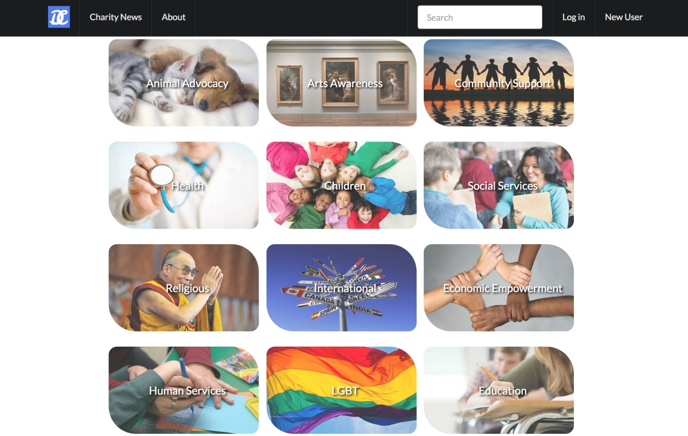

Dev Bootcamp capstone 8 day final project. The app is designed to gather disparate charities together in one location to enable users to donate item-specific needs to the charity. It imports charity Amazon wishlists in real time, and offers full user & charity login/logout/profile capability. The site was built with Javascript, jQuery, Ruby, Rails, AJAX, Semantic, HTML5, & CSS3.
A simple javascript/html game and my first foray into javascript. Completed in Phase 0 of Dev Bootcamp. First attempt at collision detection. Originally had it so the cheese moved as well, but resulted in choppy, unrealistic movement. Canvas resizes dynamically.

My brother's idea. A smaller Rails & jQuery project with the idea to incorporate Google Adsense at some point. Allows users to share via Facebook or Twitter an image of their favorite cat. Most challenging part was hacking around Facebook's Share functionality... It typically only allows you to share a single image for a given website, but we wanted the users to be able to share an image of their favorite particular cat. Got it to work after some tinkering. Rails, Javascript, jQuery, HTML, CSS.